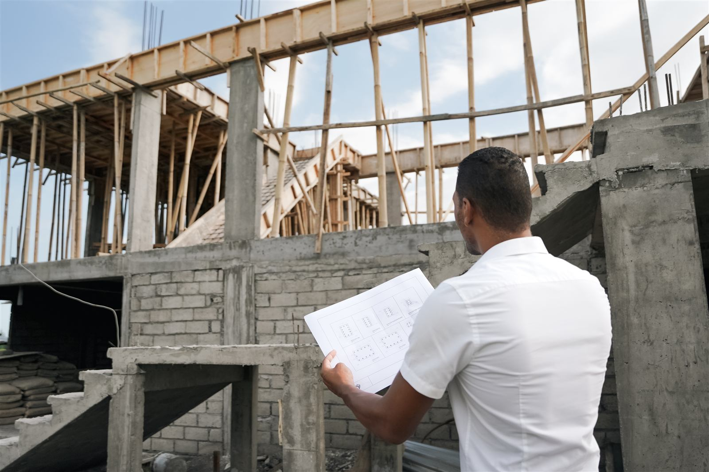
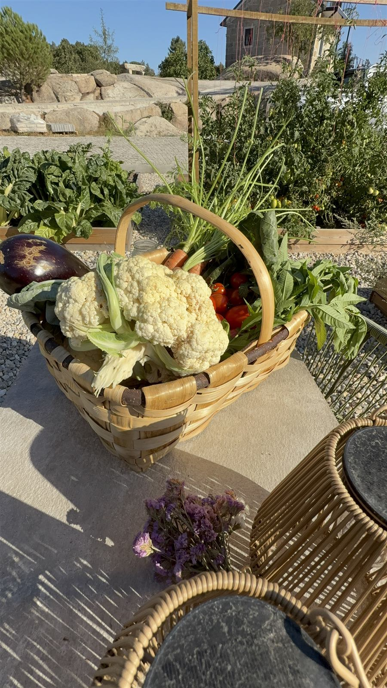

Who I am
I'm Mwata. I have built a life abroad twice.
I had a good job and a comfortable home, but I felt that something was missing. Work kept me so busy that I rarely stopped long enough to understand what it was. The feeling did not go away.
- 2020
Selling the house
I sold my house in the Netherlands to travel the world. Then COVID stopped those plans. A course helped me get clear about what I really wanted.
- Bali
Two bags, a new life
During a two-month sabbatical in Bali, I finally had room to think. I wrote down a life near the sea, in a warm climate, where I could run my own business and help people. Back home, I left my job, sold what I still owned and moved to Bali with two bags. I started a consultancy, bought a house, and later an inspection business of my own.
- Four years later
A new picture
Bali changed, and so did I. I missed being creative: building things and working in a garden. A YouTube channel about living more self-sufficiently set me thinking about another move.
- April 2024
The third plot
I travelled through Portugal in a campervan, exploring the regions and visiting plots I had shortlisted. I had not planned to buy on that trip. But when I saw the third plot, I knew it was the one.
- August 2024
Signing
I signed the purchase agreement. By the end of that year, the land was officially mine.
- Today
Living it
I live on my land in rural central Portugal, surrounded by nature, with enough projects to keep me creative for years. It is not finished, and it does not have to be. It is real.



Inspecting a build in Bali · the campervan trip through Portugal · the first harvest.